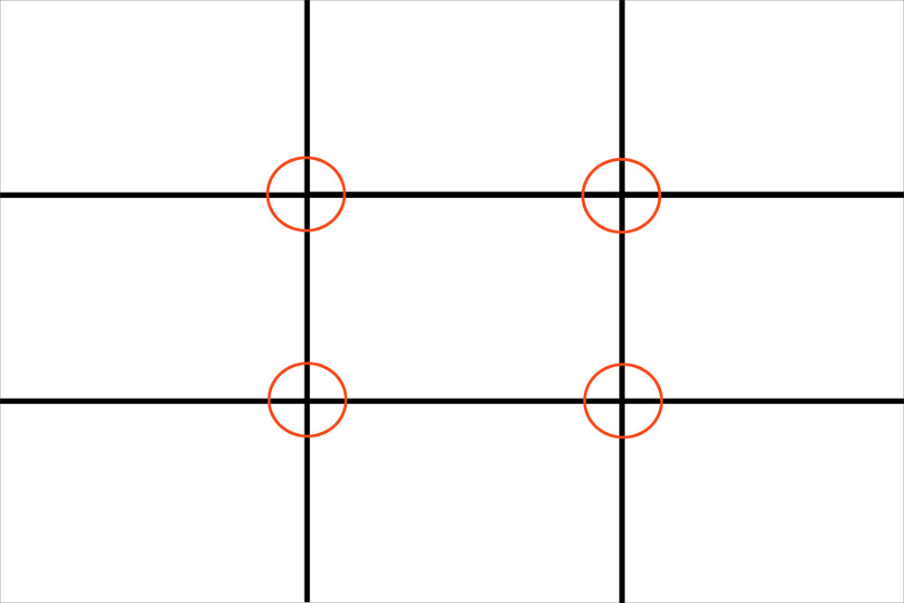
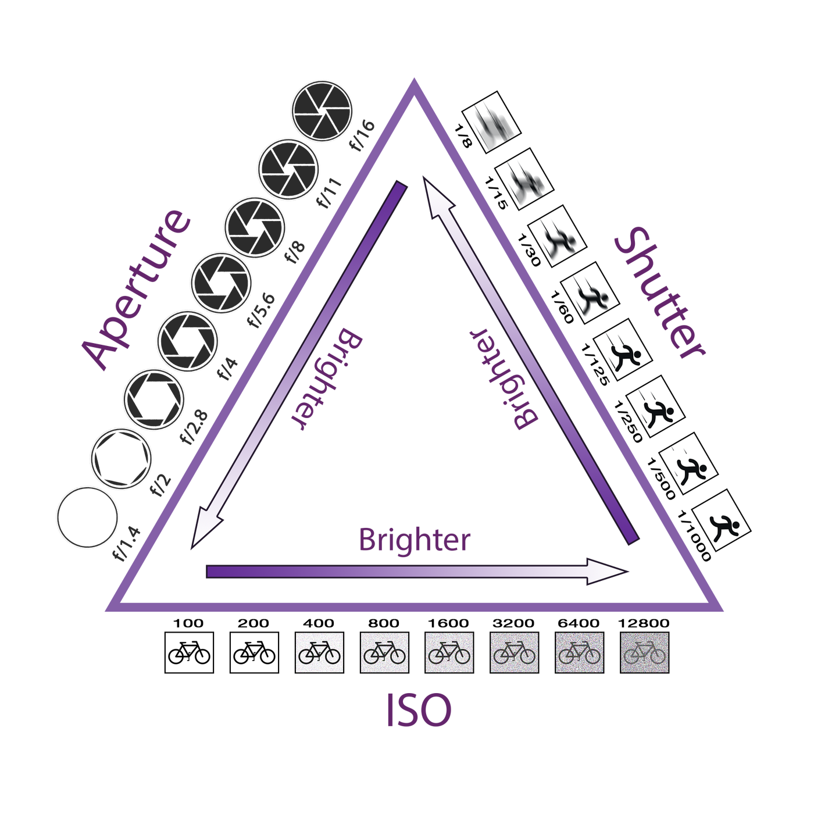
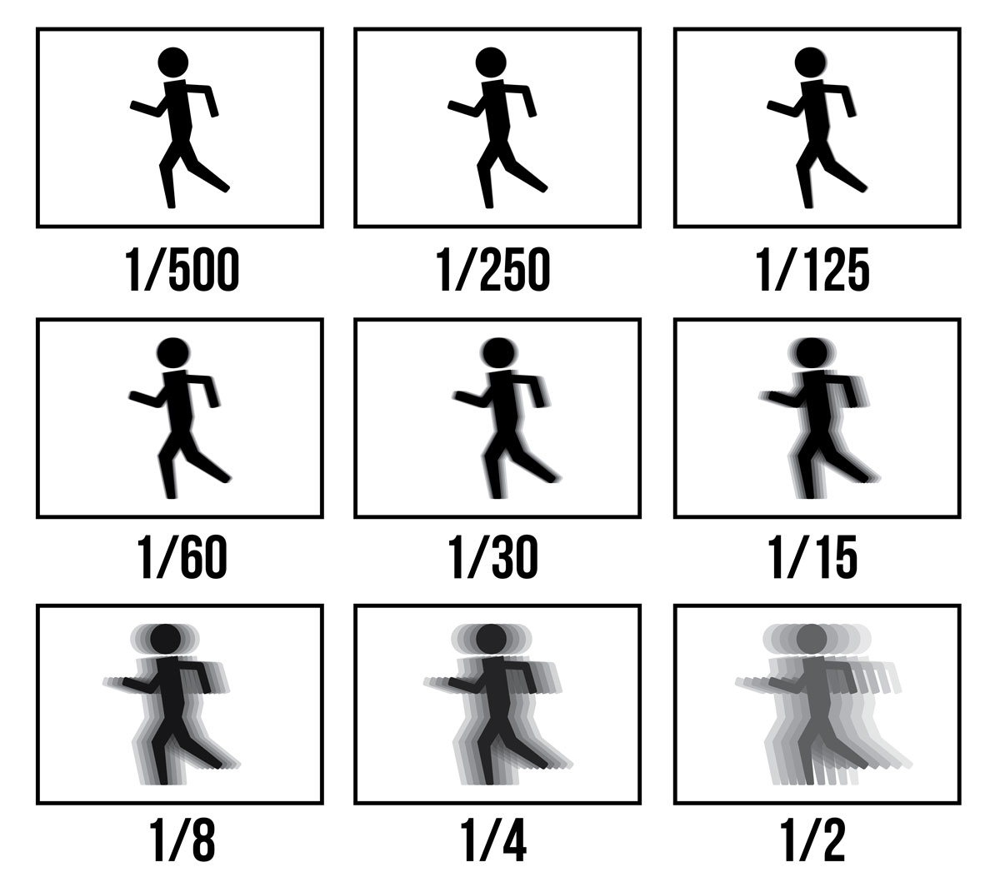
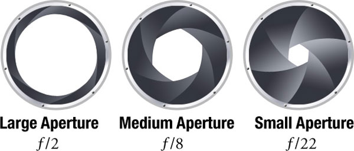

The basic principle behind the rule of thirds is to imagine breaking an image down into thirds.
Both horizontally and vertically so that you have 9 parts.
The theory is that if you place points of interest in the intersections or along the lines that your photo becomes more balanced.
It will enable a viewer of the image to interact with it more naturally.

Exposure
When you first start taking pictures, you might be confused by the countless buttons and menu options on your camera.
However, there is no excuse for using a bad in-camera exposure.
By understanding how to expose an image properly, you will be able to capture photographs of the ideal brightness,
including high levels of detail in both the shadows and highlight areas. It is a crucial part of how bright or dark your pictures appear.

Shutter Speed
Shutter speed isn’t particularly difficult; it is just the amount of time your camera spends taking a picture.
This could be 1/100 of a second, or 1/10 of a second, or three seconds, or five minutes.
Some people build custom cameras that take decades to capture a single photo.
Your camera won’t let you take a decades-long photo.
Instead, the longest allowable shutter speed tends to be around 30 seconds, although it does depend upon your camera.
For example, on the Canon 6d markII, you can shoot any shutter speed from 1/4000 second to 30 seconds, as well as a time mode for even longer exposures.
Other cameras generally allow similar settings.

Apeture
Aperture is one of the three pillars of photography and certainly the most important.
Aperture can add dimension to your photos by controlling depth of field.
At one extreme, aperture gives you a blurred background with a beautiful shallow focus effect.
At the other, it will give you sharp photos from the nearby foreground to the distant horizon.
On top of that, it also alters the exposure of your images by making them brighter or darker.
